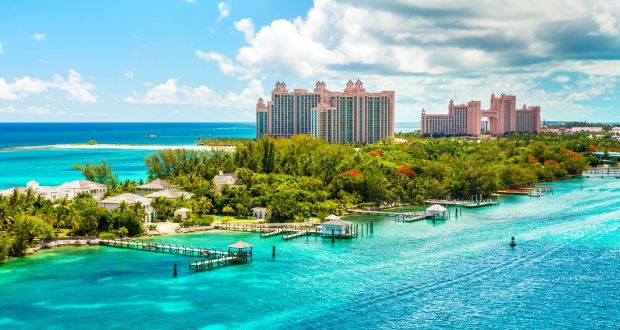

| SHUMEIKO VITALIY |
BAHAMAS |
 |
The Bahamas (/bəˈhɑːməz/ (About this sound listen)),
known officially as the Commonwealth of The Bahamas,[11]
is an archipelagic state within the Lucayan Archipelago.
It consists of more than 700 islands, cays, and islets in
the Atlantic Ocean, and is located north of Cuba and Hispaniola
(Haiti and the Dominican Republic), northwest of the Turks and Caicos
Islands, southeast of the United States state of Florida, and east
of the Florida Keys. The capital is Nassau on the island of New
Providence. The designation of "the Bahamas" can refer either to the country
or to the larger island chain that it shares with the Turks and Caicos Islands.
The Royal Bahamas Defence Force describes the Bahamas territory as encompassing 470,000 km2
(180,000 sq mi) of ocean space. |